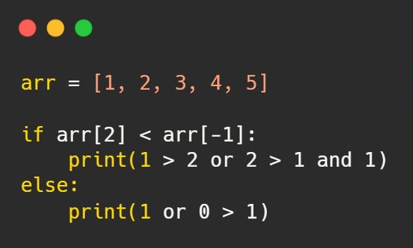

# python3 -V : 3.10.5
import ast
logic = "(1 > 2 or 2 > 1 and 1)"
>>>: ast.parse?
< Signature:
< ast.parse(
< source,
< filename='',
< mode='exec',
< *,
< type_comments=False,
< feature_version=None,
< )
< Docstring:
< Parse the source into an AST node.
logic_expression = ast.parse(logic, mode='eval')
>>>: ast.dump?
< Signature:
< ast.dump(
< node,
< annotate_fields=True,
< include_attributes=False,
< *,
< indent=None,
< )
< Docstring:
< Return a formatted dump of the tree in node.
logic_dump = ast.dump(logic_expression, indent=4)
>>> print(logic_dump)
< Expression(
< body=BoolOp(
< op=Or(),
< values=[
< Compare(
< left=Constant(value=1),
< ops=[
< Gt()],
< comparators=[
< Constant(value=2)]),
< BoolOp(
< op=And(),
< values=[
< Compare(
< left=Constant(value=2),
< ops=[
< Gt()],
< comparators=[
< Constant(value=1)]),
< Constant(value=1)])]))
exp = BoolOp( - bool(1) - True
(
(1 > 2) - False
Or() - (False or 1) - 1
(
(2 > 1) - True
And() - (True and 1) - 1
(1) - 1
)
)
)
# Source
# Or() : https://realpython.com/python-or-operator/
# And(): https://realpython.com/python-and-operator/